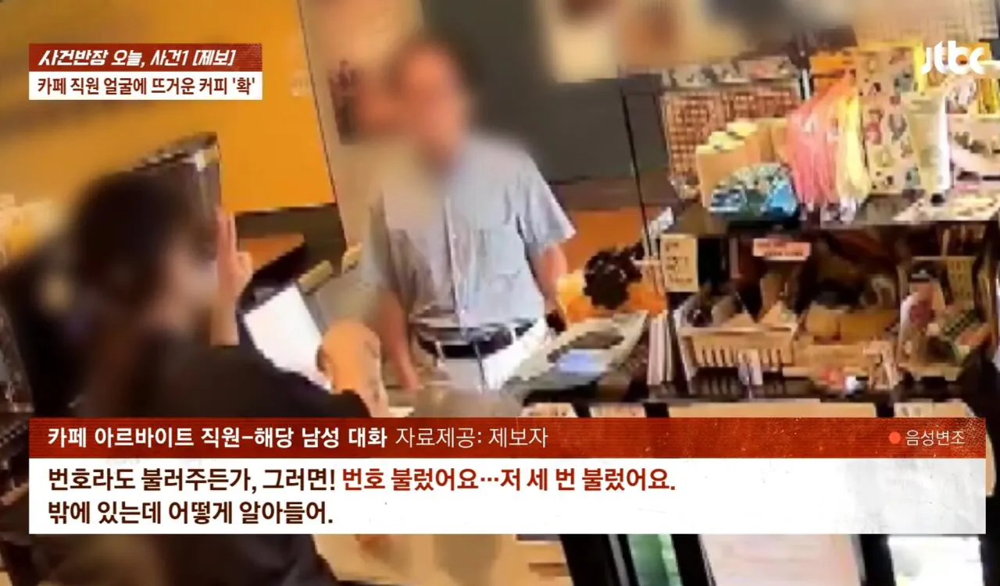
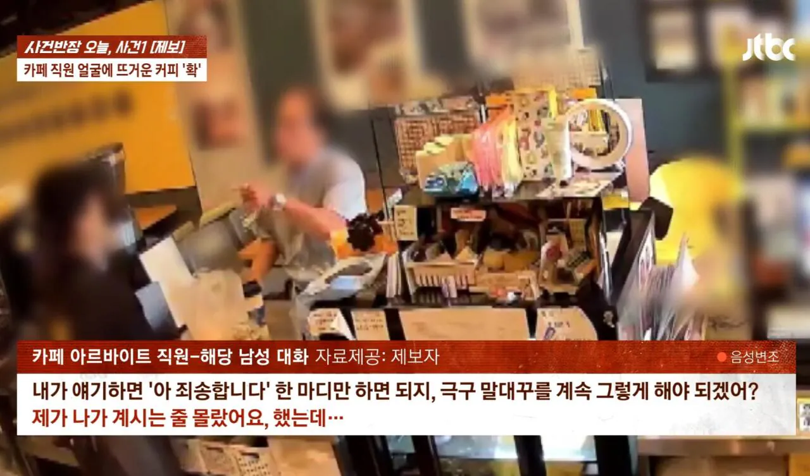
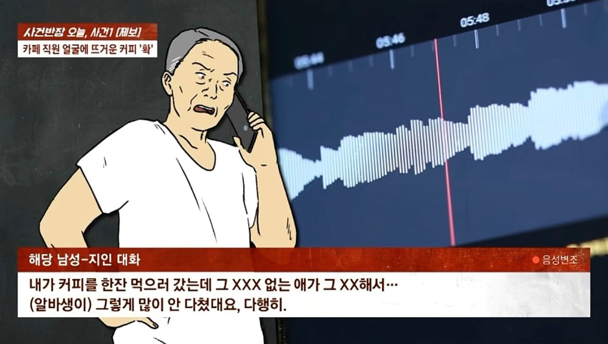
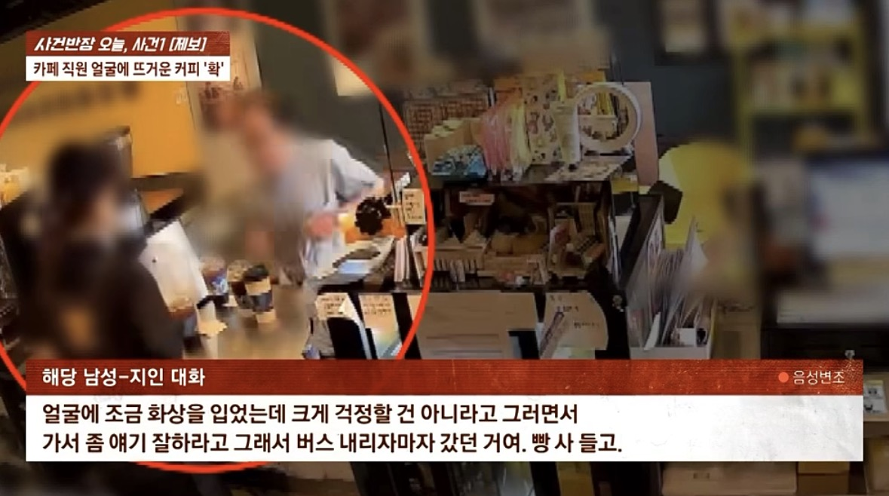
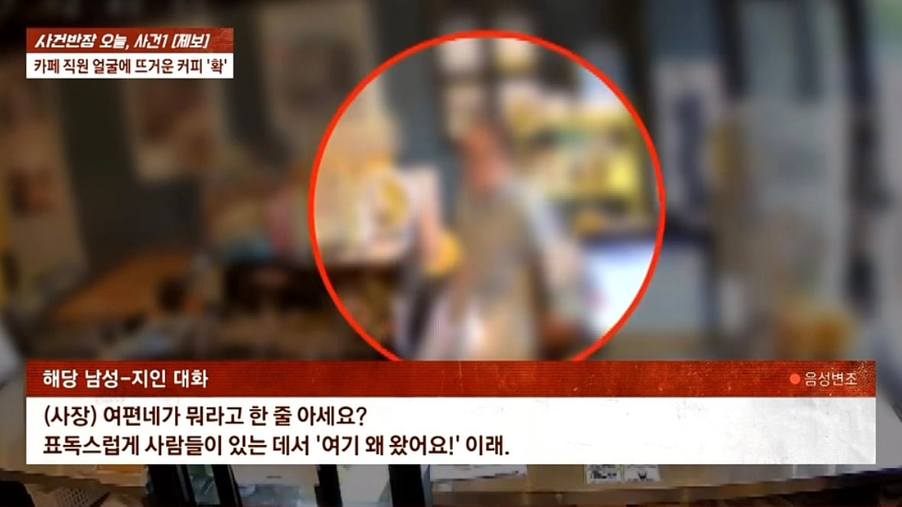
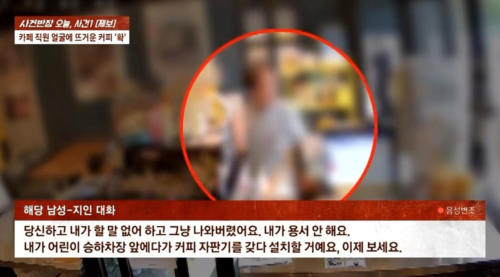

https://www.dogdrip.net/724683843
커피 안줬다고 알바생 얼굴에 뜨거운 커피 던진 남성
알바생은 얼굴에 화상을 입어 구급차타고 병원에서 치료받음
사건 이후 가해자가 지인과 나눈 대화

자막은 순화했지만 "그 싸가지 없는 가시나가 그지랄 해서"라고 말함


카페 사장 호칭은 "여편네"

도대체 자기가 뭘 용서한다는거임?
흠 정말이지 두들겨 패고 싶네요ㅎㅎ